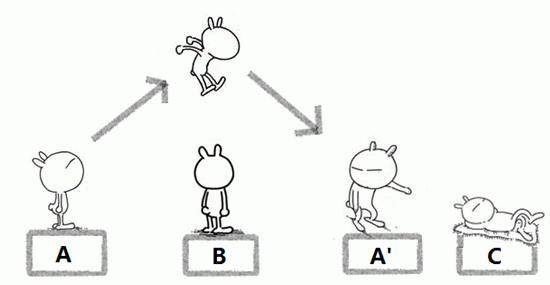
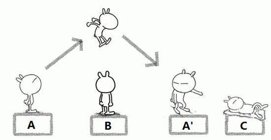

从前，森林里有三只寂寞的兔子。 它们平时搞OI，做题做累了就开始玩游戏。
游戏在一个无限长的由树桩组成的直线上进行，相邻两树桩距离相同，为了方便表示，兔子们把树桩标号为…，-2，-1，0，1，2，…。游戏开始时，三只兔子站在不同的三个树桩上。游戏中，兔子可以跳过另一只兔子到达轴对称的那个树桩上。

但是，兔子不能落在已有兔子的树桩，也不能一次跃过两只兔子。
出于OIer的本性，兔子们想探究一下，从游戏的初始局面，恰跳K次到达某个特定局面，有多少种不同的跳跃顺序。
| F.A.Qs | Home | Discuss | ProblemSet | Status | Ranklist | Contest | 入门OJ | ModifyUser Xeonacid | Logout | 捐赠本站 |
|---|
从前，森林里有三只寂寞的兔子。 它们平时搞OI，做题做累了就开始玩游戏。
游戏在一个无限长的由树桩组成的直线上进行，相邻两树桩距离相同，为了方便表示，兔子们把树桩标号为…，-2，-1，0，1，2，…。游戏开始时，三只兔子站在不同的三个树桩上。游戏中，兔子可以跳过另一只兔子到达轴对称的那个树桩上。

但是，兔子不能落在已有兔子的树桩，也不能一次跃过两只兔子。
出于OIer的本性，兔子们想探究一下，从游戏的初始局面，恰跳K次到达某个特定局面，有多少种不同的跳跃顺序。
输入一行，前三个数字，表示三只兔子的起始位置。接下来三个数字，表示终止局面的位置。最后一个数字，表示K。
输出不同方案数模1,000,000,007的结果。
100%数据满足1≤k≤100，位置标号的绝对值不超过10^18。